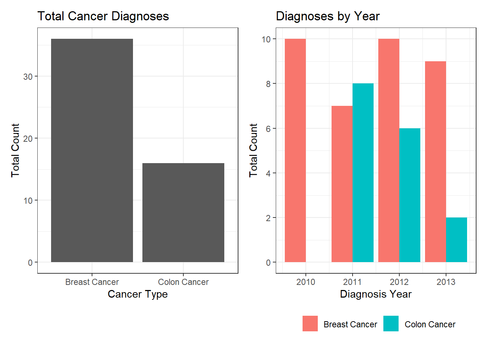
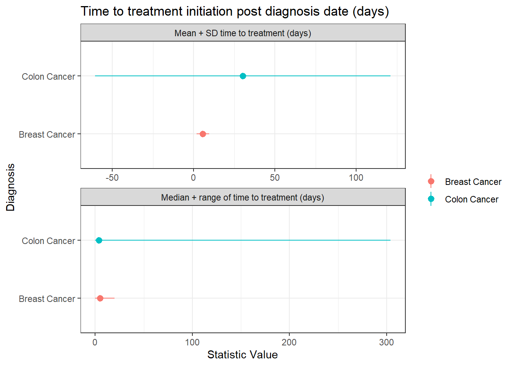

Please also see https://github.com/samhillman/flatiron-technical-test for full code
Introduction to the problem
A cancer clinic wants to understand how four antineoplastic (e.g., anti-cancer) drugs are being given. Drugs A and B are chemotherapy drugs (sometimes given in combination) and Drugs C and D are immunotherapy drugs. The clinic has provided us with two datasets: one gives diagnoses by patient and the other dataset gives treatment dates for these patients for the drugs of interest. None of the patients in this cohort have died to date, and no data is missing.
General questions
1. When presented with a new dataset or database, what steps do you generally take to evaluate it prior to working with it?
There are a couple of main areas that I’m usually interested in when looking at the appropriateness of a given RWD database. These are:
Missingness and bias.
How complete is the dataset for the most important question we’re trying to answer? e.g. for specific cancer analyses, how complete is the biomarker test information (such as EGFR testing for lung cancer patients)? For RWE datasets, how complete is the patient journey - how much follow-up do we have, do patients drop in or out of network and the data, do we have closed or open claims data available? How representative is the data - how close to the known rates of different biomarker statuses is the dataset (e.g. what is the HER2+ve vs HER2-ve rates by ethnicity in the dataset compared to published literature). We can do this from simple summary statistics, counts of groups, and functions to look for missingess (e.g. naniar).
Time scales.
What time periods are covered by the data? A lot of oncology studies I’m currently working on are focused on drugs approved in the last few years. If the data is focused on historic samples, then we may not be able to answer the questions we’re interested in. Again, to assess this we can look for simple counts per year or other similar summary statistics.
Apart from these, I generally have a set of study-specific goals that allow me to focus on finding the most appropriate data sources to answer the questions that we’re interested in asking.
2. Based on the information provided above and the attached dataset, what three questions would you like to understand prior to conducting any analysis of the data?
What is the goal of the study? What is the overall question that we’re trying to answer?
I find that it can be very easy to continually add more analyses to a study if we haven’t defined the study goals - but this is not best practice, either scientifically or timewise. If we know what research question we are trying to answer, then that can inform all of our analyses and will help with requirements gathering and protocol writing.
Why this dataset?
The dataset we’re using here is very sparse. However, in the real world there could be a good reason for that - some conditions are inherantly rare and so we may end up working with small sample sizes. But, it’s important that everyone involved in the study design is on the same page about the possible limitations of working with very small datasets (e.g. larger confidence intervals, harder to draw firm conclusions). In some cases, other datasets are more appropriate and can be used, but other team members may not have realised why we might need to do so.
What timescale and output are you looking for?
In project work, the earlier we can agree on time-scales, deliverables, and what is expected from all parties then the more successful the analysis project will be. Expectations must be met from all sides, so if we have them in writing and know what the next steps are then we can work much more efficiently.
Data analysis
I’ve included two output files here - one is just the output, and one is the output with the code included too. There are multiple comments and talking points throughout the code.
library(tidyverse)library(here)library(lubridate)library(gt)library(scales)library(patchwork)library(janitor)library(purrr)library(ggdist)library(survival)library(glmmTMB)library(gtsummary)diagnosis <-read_csv(here("data/Patient_Diagnosis.csv"))treatment <-read_csv(here("data/Patient_Treatment.csv"))# I'm usually OK with numeric diagnosis codes and character diagnosis and drug# codes at the initial data analysis stage, but as I'm going to be changing the# types of the other variables I'll do them too.# n.b. I usually leave variables that could be factors as strings until I need# to change them as factors later - I find that in my analyses being able to# use regexps is more useful for complex mungingdiagnosis <- diagnosis |>mutate(patient_id =as.character(patient_id),diagnosis_date =mdy(diagnosis_date),diagnosis_code =as.character(diagnosis_code) )treatment <- treatment |>mutate(patient_id =as.character(patient_id),treatment_date =mdy(treatment_date) )# we also want to check the data for duplicates and if needed take the earliest dx dateduplicate_dx <- diagnosis |>group_by(patient_id, diagnosis) |>count() |>filter(n >1)# so yes, we have duplicates here. Multiple cancer dxs are fine, but the multiple# dxs of the same cancer type are not. We can even see (using the ICD9 codes)# that these are the same type of dx - we're not dealing with metastases (no 174.9# in the duplicate dxs)diagnosis |>filter(patient_id %in% duplicate_dx$patient_id)
# A tibble: 11 × 4
patient_id diagnosis_date diagnosis_code diagnosis
<chr> <date> <chr> <chr>
1 3449 2011-09-09 153.5 Colon Cancer
2 3449 2011-09-09 153.4 Colon Cancer
3 3757 2011-10-11 174.1 Breast Cancer
4 3757 2011-10-17 153.4 Colon Cancer
5 3757 2011-10-17 153.5 Colon Cancer
6 4256 2011-11-07 174.5 Breast Cancer
7 4256 2011-11-07 174.8 Breast Cancer
8 4354 2012-02-04 174.8 Breast Cancer
9 4354 2012-02-04 174.5 Breast Cancer
10 4374 2012-03-20 174.5 Breast Cancer
11 4374 2012-03-20 174.8 Breast Cancer
# we'll take the earliest dx date for each type of cancerdiagnosis_filtered <- diagnosis |>group_by(patient_id, diagnosis) |>slice_min(diagnosis_date, with_ties =FALSE) |>ungroup()# treatment data can be more complicated to de-duplicate. Let's see if we have# any exact duplicatesnrow(treatment |>distinct()) ==nrow(treatment)
[1] FALSE
# looks like we do. Let's just check them quicklytreatment |> janitor::get_dupes()
# A tibble: 54 × 4
patient_id treatment_date drug_code dupe_count
<chr> <date> <chr> <int>
1 2475 2010-02-17 B 10
2 2475 2010-02-17 B 10
3 2475 2010-02-17 B 10
4 2475 2010-02-17 B 10
5 2475 2010-02-17 B 10
6 2475 2010-02-17 B 10
7 2475 2010-02-17 B 10
8 2475 2010-02-17 B 10
9 2475 2010-02-17 B 10
10 2475 2010-02-17 B 10
# ℹ 44 more rows
# with the limited drug information here, I'm going to assume that these are# duplicates from messy RW data. Let's filter them outtreatment_filtered <- treatment |>distinct()
1. First, the clinic would like to know the distribution of cancer types across their patients. Please provide the clinic with this information.
# How can we present the information? Simple to provide tables.# nb for longer analyses, I'd clean the column names to make life easier. As we're# making tables straight away, I'll leave them in a nice format for presentationall_dx <- diagnosis_filtered |>group_by(diagnosis) |>count() |>pivot_wider(names_from ="diagnosis", values_from ="n") |>mutate("Diagnosis Year"="All", .before =everything())dx_by_year <- diagnosis_filtered |>group_by(diagnosis, year(diagnosis_date)) |>count() |>pivot_wider(names_from ="diagnosis", values_from ="n") |>rename("Diagnosis Year"=`year(diagnosis_date)`) |>mutate(`Colon Cancer`=replace_na(`Colon Cancer`, 0),`Diagnosis Year`=as.character(`Diagnosis Year`) )diagnosis_gt <-bind_rows( all_dx, dx_by_year ) |>gt() |>tab_spanner(label ="Cancer Type",columns =c(`Breast Cancer`, `Colon Cancer`) ) |>tab_style(style =cell_borders(sides =c("right"),weight =px(2) ),locations =cells_body(columns =c(`Diagnosis Year`) ) ) |>tab_style(style =cell_borders(sides =c("right"),weight =px(2) ),locations =cells_column_labels(columns =c(`Diagnosis Year`) ) ) |>tab_style(style =cell_borders(sides =c("bottom"),weight =px(2) ),locations =cells_column_labels(columns =everything() ) ) |>tab_style(style =cell_borders(sides =c("bottom"),color ="black",weight =px(2),style ="dashed" ),locations =cells_body(rows =1,columns =everything() ) ) |>cols_align(align ="center",columns =c(`Breast Cancer`, `Colon Cancer`) ) |>tab_header(title ="Number of cancer diagnoses over time" )diagnosis_gt
Number of cancer diagnoses over time
Diagnosis Year
Cancer Type
Breast Cancer
Colon Cancer
All
36
16
2010
10
0
2011
7
8
2012
10
6
2013
9
2
# We can also graph the distribution of cases and cases per year, but an overall# bar chart isn't THAT informativeall_dx_graph <- diagnosis_filtered |>ggplot(aes(x = diagnosis)) +geom_bar() +labs(x ="Cancer Type",y ="Total Count",title ="Total Cancer Diagnoses" ) +theme_bw()# have to be a bit more complex here - we need the zero count for Colon Cancer# in 2010 otherwise the bars in position = "dodge" aren't consistentdx_by_year_graph <- diagnosis_filtered |>mutate(diagnosis_year =year(diagnosis_date)) |>group_by(diagnosis_year, diagnosis) |>summarize(count =n()) |>ungroup() |>complete(diagnosis_year, diagnosis, fill =list(count =0)) |>ggplot(aes(x = diagnosis_year, y = count, fill = diagnosis)) +geom_bar(stat ="identity", position ="dodge") +labs(x ="Diagnosis Year",y ="Total Count",title ="Diagnoses by Year" ) +theme_bw() +scale_y_continuous(breaks =pretty_breaks()) +theme(legend.title =element_blank(),legend.position ="bottom" )all_dx_graph | dx_by_year_graph

2. The clinic wants to know how long it takes for patients to start therapy after being diagnosed, which they consider to be helpful in understanding the quality of care for the patient. How long after being diagnosed do patients start treatment?
# We want the earliest therapy start date. As there are multiple treatment dates,# we'll find the one closest to but after dx date.# note: in real life, we may want to find the treatment date closest to dx date# even if it's before the dx date. Patients may start therapy on the same day as# their diagnosis, but the paperwork for dx may be delayed. However, here I'll be# strict and only look for on or after dx date.# however - we have an issue! There are patients with multiple cancer types and# treatment isn't specified for cancer type in the treatment table(multiple_cancer_dx <- diagnosis_filtered |>group_by(patient_id, diagnosis) |>count() |>group_by(patient_id) |>count() |>filter(n >1))
# these patients diagnosis dates are also very close - it's going to make telling# the treatments apart impossible.diagnosis_filtered |>filter(patient_id %in% multiple_cancer_dx$patient_id)
# A tibble: 10 × 4
patient_id diagnosis_date diagnosis_code diagnosis
<chr> <date> <chr> <chr>
1 3757 2011-10-11 174.1 Breast Cancer
2 3757 2011-10-17 153.4 Colon Cancer
3 6877 2012-12-09 174.3 Breast Cancer
4 6877 2012-11-26 153.4 Colon Cancer
5 6889 2012-11-17 174.7 Breast Cancer
6 6889 2012-11-14 153.7 Colon Cancer
7 6922 2012-11-20 174.9 Breast Cancer
8 6922 2012-11-15 153.6 Colon Cancer
9 7230 2013-01-06 174.9 Breast Cancer
10 7230 2013-01-02 153.8 Colon Cancer
# so, we're going to have to remove them for the remainder of the analysis.# now we can join the datasets together, filter for the closest treatment date# after dx date, and then work out the time to treatment.time_to_treatment <- diagnosis_filtered |>filter(!patient_id %in% multiple_cancer_dx$patient_id) |>left_join(treatment_filtered, by ="patient_id", multiple ="all") |># strict filtering for this example. First, we find only treatment dates >= dx date. Then, we find the earliest treatment date. Then, we can work out the time to treatmentfilter(treatment_date >= diagnosis_date) |>group_by(patient_id, diagnosis) |>slice_min(treatment_date, with_ties =FALSE) |>ungroup() |>mutate(time_to_treatment =difftime(treatment_date, diagnosis_date, units ="days"),time_to_treatment =as.numeric(time_to_treatment) )# now we can summarise our results. Usually we'd have a function to do this repeatedly,# here we won't as it's one-offtime_table <- time_to_treatment |>group_by(diagnosis) |>summarise(n =n(),mean =mean(time_to_treatment, na.rm =TRUE),sd =sd(time_to_treatment, na.rm =TRUE),median =median(time_to_treatment, na.rm =TRUE),min =min(time_to_treatment, na.rm =TRUE),max =max(time_to_treatment, na.rm =TRUE) ) |>mutate(n =as.character(n),mean_sd =str_c(round(mean, 1), " (", round(sd, 1), ")"),median_range =str_c(round(median, 1), " (", min, "-", max, ")") )# we have a large range in the colon cancer patients - 0 to 304. Let's check that.time_to_treatment |>filter(time_to_treatment >200)
# A tibble: 1 × 7
patient_id diagnosis_date diagnosis_code diagnosis treatment_date drug_code
<chr> <date> <chr> <chr> <date> <chr>
1 2634 2011-02-19 153.9 Colon Cancer 2011-12-20 A
# ℹ 1 more variable: time_to_treatment <dbl>
# This is large! There is one patient with time to treatment of over 300 days.# Is this an outlier? It could be. Standard of care is surgery within ~30 days# (depending on who you ask!). BUT. This is not a surgery table. This is a drug# therapy table. A patient could have had surgery for low-stage cancer, and then a# year later received drug treatment. This is perfectly feasible and with the data# we have we can't say if it's an outlier. This gets in to a different philosophical# conversation about outliers, however - which I'd love to discuss! My view is unless# the data is fundamentally wrong - a mistake - then it is a valid part of the data# generation process and should be included.time_table_gt <- time_table |>select(diagnosis, n, mean_sd, median_range) |>pivot_longer(cols =c(n, mean_sd, median_range), names_to ="statistic", values_to ="value") |>pivot_wider(names_from = diagnosis, values_from = value) |># clean up names for columnmutate(statistic =case_when( statistic =="n"~"N", statistic =="mean_sd"~"Mean (SD)", statistic =="median_range"~"Median (Range)" )) |>gt() |>tab_spanner(label ="Cancer Type",columns =c(`Breast Cancer`, `Colon Cancer`) ) |>tab_style(style =cell_borders(sides =c("right"),weight =px(2) ),locations =cells_body(columns =c(statistic) ) ) |>tab_style(style =cell_borders(sides =c("right"),weight =px(2) ),locations =cells_column_labels(columns =c(statistic) ) ) |>tab_style(style =cell_borders(sides =c("bottom"),weight =px(2) ),locations =cells_column_labels(columns =everything() ) ) |>cols_align(align ="center",columns =c(`Breast Cancer`, `Colon Cancer`) ) |>tab_header(title ="Time from initial cancer diagnosis to start of therapy (days)" )# could also forest plot this I guesstime_statistics <- time_to_treatment |>group_by(diagnosis) |>summarise(mean =mean(time_to_treatment, na.rm =TRUE),median =median(time_to_treatment, na.rm =TRUE),sd =sd(time_to_treatment, na.rm =TRUE),min =min(time_to_treatment, na.rm =TRUE),max =max(time_to_treatment, na.rm =TRUE) ) |>pivot_longer(c(mean, median), names_to ="statistic", values_to ="value") |>mutate(lower =case_when( statistic =="mean"~ value - sd, statistic =="median"~ min ),upper =case_when( statistic =="mean"~ value + sd, statistic =="median"~ max ),statistic =case_when( statistic =="mean"~"Mean + SD time to treatment (days)", statistic =="median"~"Median + range of time to treatment (days)" ) )# Create the combined forest plottime_to_treatment_graph <- time_statistics |>ggplot(aes(x = diagnosis, y = value, colour = diagnosis)) +geom_pointrange(aes(ymin = lower, ymax = upper), size =0.5) +facet_wrap(~statistic, scales ="free", ncol =1) +coord_flip() +labs(x ="Diagnosis",y ="Statistic Value",title ="Time to treatment initiation post diagnosis date (days)" ) +theme_bw() +theme(legend.title =element_blank())
Time from initial cancer diagnosis to start of therapy (days)
statistic
Cancer Type
Breast Cancer
Colon Cancer
N
30
11
Mean (SD)
5.6 (3.9)
30.3 (90.8)
Median (Range)
5 (0-20)
4 (0-304)

3. Which treatment regimens [i.e., drug(s)] do you think would be indicated to be used as first-line of treatment for breast cancer? What about colon cancer? (For more information between first-line and second-line treatments (applicable between chemotherapy drugs as well as chemo v immuno therapies), please reference https://www.cancer.gov/publications/dictionaries/cancer-terms?cdrid=346494)
I’ll just focus on drugs, rather than surgery or other therapies available.
Typical first-line therapies for breast cancer are Doxorubicin, Cyclophosphamide, Carboplatin, Paclitaxel or Docetaxel. HER2 positive breast cancer patients may get trastuzumab or pertuzumab. TNBC patients may get pembrolizumab. Some patients, especially those who are HR+, will recieve an AI such as anastrazole.
For colon cancer, typical first line therapies include Capecitabine, Fluorouracil, Irinotecan, and combinations of these and other drugs. Pembrolizumab is also a first-line treatment for some unresectable colon cancers.
4. Do the patients taking Regimen A vs. Regimen B as first-line therapy for breast cancer vary in terms of duration of therapy? Please include statistical tests and visualizations, as appropriate.
# we have the joining code from above. Should be made more generalisable for longer-term workbreast_cases <- diagnosis_filtered |>filter(!patient_id %in% multiple_cancer_dx$patient_id,str_detect(diagnosis, "Breast") ) |>left_join(treatment_filtered, by ="patient_id", multiple ="all")# we have a patient with no matching drug_code - that's ok here, but something to be aware ofbreast_cases |>count(drug_code)
# A tibble: 4 × 2
drug_code n
<chr> <int>
1 A 324
2 B 276
3 C 151
4 <NA> 1
# Now we have our breast-cases, we need to define the first-line therapy. We'll use the following rules:# - First therapy started within 14 days pre-index or anytime post-index# - Therapies with less than 28 day gap will be considered the same line (for the duration below)# How are we going to define duration of therapy? In this dataset we only have# treatment_date, not treatment duration. For this example, we'll use the time# difference between the first treatment date and last treatment date for each# patient. This isn't really appropriate! We don't know the actual therapy durations# so this will have to do for here.breast_cases_filtered <- breast_cases |>filter(str_detect(drug_code, "A|B")) |># this first finds cases within 14 days pre-indexmutate(time_between_treatment_and_index =difftime(treatment_date, diagnosis_date, units ="days"),time_between_treatment_and_index =as.numeric(time_between_treatment_and_index) ) |>filter(time_between_treatment_and_index >=-14) |># and then we find the first case for each patient as our start of 1Lgroup_by(patient_id) |>mutate(start_of_1l =min(treatment_date)) |>ungroup()# First, calculate date ranges for each drug for each patient. This combines date ranges if they're less than 28 days apart for each patient_id and drug_codebc_ranges <- breast_cases_filtered |>arrange(patient_id, drug_code, treatment_date) |>group_by(patient_id, drug_code) |>mutate(new_group = treatment_date -lag(treatment_date, default =first(treatment_date)) >28) |>mutate(line_number =cumsum(new_group) +1) |>group_by(patient_id, drug_code, line_number) |>summarise(start_date =min(treatment_date),end_date =max(treatment_date),.groups ="drop" )# Then, combine overlapping ranges for the same patient, listing all drugs involved.# Then, combine the drug_code if there are multiple drug_codes to account for combination therapybc_combined <- bc_ranges |>group_by(patient_id, start_date) |>summarise(drug_codes =list(unique(drug_code)),end_date =max(end_date),.groups ="drop" ) |>group_by(patient_id, end_date) |>summarise(drug_codes =list(unique(unlist(drug_codes))),start_date =min(start_date),.groups ="drop" ) |>mutate(drug_code =map_chr(drug_codes, ~paste(.x, collapse ="+")),drug_codes =NULL ) |>arrange(patient_id, start_date) |>group_by(patient_id) |>mutate(line_number =row_number())# Finally, clean up the drug_codes and add therapy duration# Remember: end_date here is just max(therapy_date) - it's not a true end date!bc_lots <- bc_combined |>select(patient_id, drug_code, line_number, start_date, end_date) |>mutate(drug_code =case_when( drug_code =="B+A"~"A+B",TRUE~ drug_code ),line_duration =difftime(end_date, start_date, units ="days"),line_duration =as.numeric(line_duration) )
Some caveats here:
The duration of therapy is defined as the earliest start therapy start date until the latest therapy start date for a specific line.
We’re only interested in first-line therapies here. We’ve defined first-line therapy as the first therapy given within 14 days pre-diagnosis date to anytime post-diagnosis date.
A line of therapy can overlap multiple treatment records if there is less than a 28 day gap between records
Many patients have both therapy A and B, at overlapping times. These can’t be considered as mono-therapies, and have been included here as combination therapies.
Treatment A and B look very similar to each other visually, while combination therapy A and B together has a much wider distribution.
To test for differences in duration of first-line therapy, I would typically look at time to treatment discontinuation (rwTTD). However, here we don’t have enough information to do this. Here is how it would be done if we had data of events:
Instead, a linear model may give us an answer here. We’ll use a Poisson distribution here - a common use of Poisson is in time-to-event data. As this is supposed to be a short technical test, we’re not going to go in to model checking here - but very happy to talk about that more!
model <-glmmTMB(line_duration ~ drug_code, data = bc_lots)model |>tbl_regression()
Characteristic
Beta
95% CI1
p-value
drug_code
drug_codeA+B
-14
-35, 7.3
0.2
drug_codeB
-12
-37, 13
0.3
1 CI = Confidence Interval
Our simple Poisson model suggests that there is no difference in first-line duration for drug B compared to drug A, and no difference in first-line duration for combination therapy A+B compared to A alone.